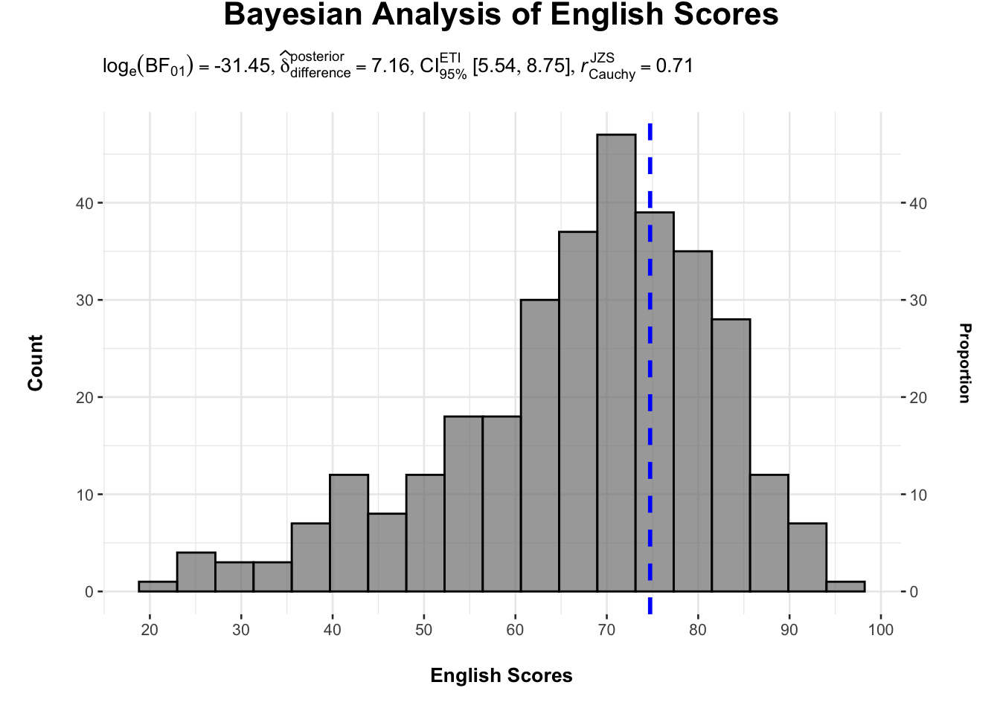
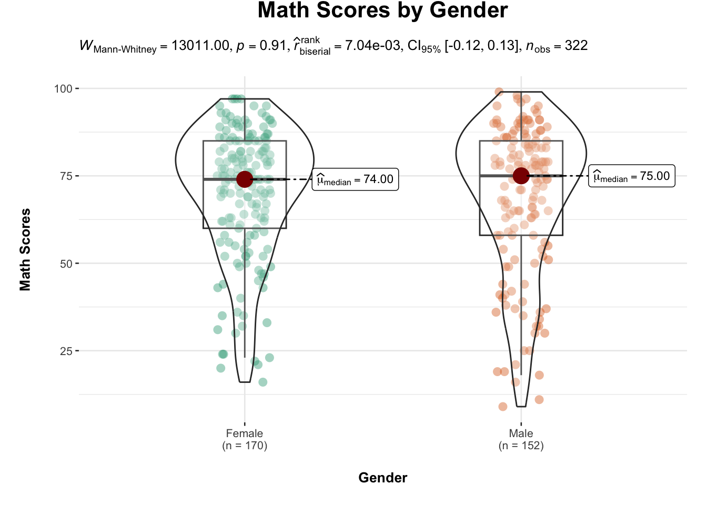
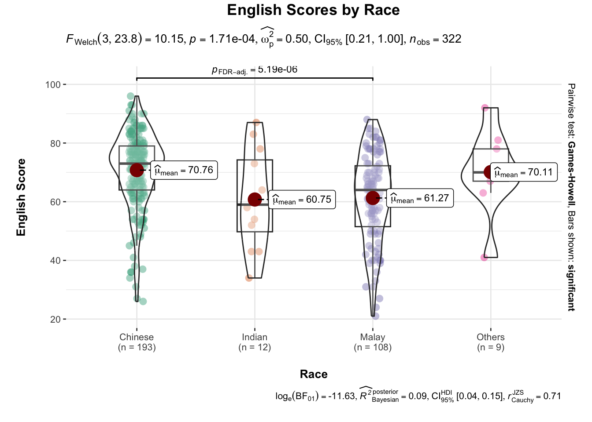
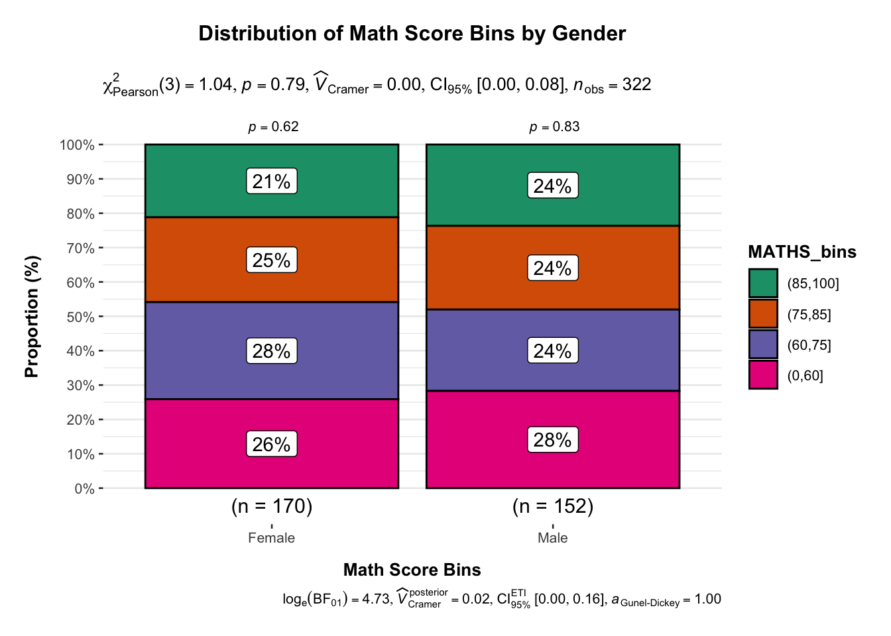

pacman::p_load(ggstatsplot, tidyverse)Hands-on_Exercise 4B
Visual Statistical Analysis
1 Learning Outcome
In this hands-on exercise, you will gain hands-on experience on using:
ggstatsplot package to create visual graphics with rich statistical information,
performance package to visualise model diagnostics, and
parameters package to visualise model parameters
2 Visual Statistical Analysis with ggstatsplot
ggstatsplot  is an extension of ggplot2 package for creating graphics with details from statistical tests included in the information-rich plots themselves.
is an extension of ggplot2 package for creating graphics with details from statistical tests included in the information-rich plots themselves.
To provide alternative statistical inference methods by default.
To follow best practices for statistical reporting. For all statistical tests reported in the plots, the default template abides by the APA gold standard for statistical reporting.
For example, here are results from a robust t-test:

3 Getting Started
3.1 Installing and launching R packages
In this exercise, ggstatsplot and tidyverse will be used.
ggstatsplot: An R package for making statistical plots easily, similar to
ggplot2.tidyverse: A collection of helpful R packages for data handling and plotting (including
ggplot2).
2.2 Data import
In this exercise we will use Exam_data.csv
Code
exam <- read_csv("~/Documents/SMU/April Term 2/Visual Analytics/patriciatrisno/ISSS608-VAA/Hands-on_Ex/Hands-on_Ex04/data/Exam_data.csv")
exam# A tibble: 322 × 7
ID CLASS GENDER RACE ENGLISH MATHS SCIENCE
<chr> <chr> <chr> <chr> <dbl> <dbl> <dbl>
1 Student321 3I Male Malay 21 9 15
2 Student305 3I Female Malay 24 22 16
3 Student289 3H Male Chinese 26 16 16
4 Student227 3F Male Chinese 27 77 31
5 Student318 3I Male Malay 27 11 25
6 Student306 3I Female Malay 31 16 16
7 Student313 3I Male Chinese 31 21 25
8 Student316 3I Male Malay 31 18 27
9 Student312 3I Male Malay 33 19 15
10 Student297 3H Male Indian 34 49 37
# ℹ 312 more rows3 One-sample test: gghistostats() method
In the code chunk below, gghistostats() is used to to build an visual of one-sample test on English scores.

set.seed(1234)
gghistostats(
data = exam,
x = ENGLISH,
type = "bayes",
test.value = 60,
xlab = "English Scores",
ylab = "Count",
title = "Bayesian Analysis of English Scores"
) +
scale_y_continuous(
name = "Count",
sec.axis = sec_axis(~ ., name = "Proportion")
) +
theme(
plot.title = element_text(hjust = 0.5, vjust = 5, size = 16),
axis.title.x = element_text(margin = margin(t = 15)),
axis.title.y.left = element_text(margin = margin(r = 15)),
axis.title.y.right = element_text(margin = margin(l = 15)),
plot.subtitle = element_text(vjust = 5),
plot.margin = margin(0.5, 0.5, 0.5, 0.5, "cm")
) +
scale_x_continuous(breaks = seq(20, 100, by = 10))\(\log_e(\text{BF}_{01}) = -31.45\): This indicates very strong evidence against the alternative hypothesis (that the mean English score is different from the \(\text{test.value}\) of 60).
\(\hat{\delta}_{\text{difference}} = 7.16\): This is the estimated difference between the posterior mean and the \(\text{test.value}\).
\(CI_{95\%}^{\text{ETI}} [5.54, 8.75]\): This is the 95% Equal-Tailed Interval for the difference, suggesting that the true difference likely lies within this range.
\(r_{\text{Cauchy}}^{\text{JZS}} = 0.71\): This is an estimate of the effect size.
\(\hat{\mu}_{\text{MAP}} = 74.74\). It would be helpful to explicitly state that this is the Maximum A Posteriori estimate of the mean English score under your Bayesian model.
In this plot, we are using histogram overlaid with statistical summaries. The histogram shows the distribution of scores, with ” Count” on the left y-axis and “Proportion” on the right.
Using the default of the gghistostats() :
Bayes Factor (BF): Indicates the strength of evidence comparing the observed data against a null value (test value = 60).
Distribution summary: Key descriptors such as mean, standard deviation, and confidence intervals are displayed.
Sample size (n): The number of observations used in the analysis is reported.
A Bayesian decision interpretation based on the Bayes Factor (e.g., “moderate evidence for the alternative hypothesis”).
4 Unpacking the Bayes Factor
A Bayes factor is the ratio of the likelihood of one particular hypothesis to the likelihood of another. It can be interpreted as a measure of the strength of evidence in favor of one theory among two competing theories.
That’s because the Bayes factor gives us a way to evaluate the data in favor of a null hypothesis, and to use external information to do so. It tells us what the weight of the evidence is in favor of a given hypothesis.
When we are comparing two hypotheses, H1 (the alternate hypothesis) and H0 (the null hypothesis), the Bayes Factor is often written as B10. It can be defined mathematically as

The Schwarz criterion is one of the easiest ways to calculate rough approximation of the Bayes Factor.
4.1 How to interpret Bayes Factor
A Bayes Factor can be any positive number. One of the most common interpretations is this one—first proposed by Harold Jeffereys (1961) and slightly modified by Lee and Wagenmakers in 2013:

5 Two-sample mean test: ggbetweenstats()
In the code chunk below, ggbetweenstats() is used to build a visual for two-sample mean test of Maths scores by gender.

ggbetweenstats(
data = exam,
x = GENDER,
y = MATHS,
type = "np",
messages = FALSE,
xlab = "Gender",
ylab = "Math Scores",
title = "Math Scores by Gender"
) +
theme(
plot.title = element_text(hjust = 0.5, vjust = 5, size = 13),
axis.title.x = element_text(margin = margin(t = 15)),
axis.title.y = element_text(margin = margin(r = 15)),
plot.subtitle = element_text(vjust = 5),
plot.margin = margin(0.5, 0.5, 0.5, 0.5, "cm")
)In the gghistostats() plot, Bayesian analysis is used to compare data (English scores) to a reference value (e.g 60). Instead of using traditional p-values, Bayesian methods give a Bayes Factor (BF) — which tells you how strong the evidence is for the alternative hypothesis (e.g., “scores are different from 60”) compared to the null hypothesis (“scores are equal to 60”).
BF > 1 → supports the alternative.
BF < 1 → supports the null.
The higher or lower the BF, the stronger the evidence.
By setting type = "np" (non-parametric), you’re telling it to not assume a normal distribution, which is safer when the data isn’t perfectly normal.
Since p=0.91 (much greater than 0.05) indicates no statistically significant differencein math scores between females and males.
Rank biserial correlation = 0.007 → effect size is extremely small (nearly zero).
95% CI [-0.12, 0.13] → the true difference in ranks is likely small or none.
6 Oneway ANOVA Test: ggbetweenstats() method
In the code chunk below, ggbetweenstats() is used to build a visual for One-way ANOVA test on English score by race.

ggbetweenstats(
data = exam,
x = RACE,
y = ENGLISH,
type = "p",
mean.ci = TRUE,
pairwise.comparisons = TRUE,
pairwise.display = "s",
p.adjust.method = "fdr",
messages = FALSE,
xlab = "Race",
ylab = "English Score",
title = "English Scores by Race",
)+
theme(
plot.title = element_text(hjust = 0.5, vjust = 3, size = 13),
axis.title.x = element_text(margin = margin(t = 15)
axis.title.y = element_text(margin = margin(r = 15)),
plot.subtitle = element_text( vjust = 5),
plot.margin = margin(0.5, 0.5, 0.5, 0.5, "cm")
)- “ns” → only non-significant
- “s” → only significant
- “all” → everything
ggbetweenstats - Summary of tests


7 Significant Test of Correlation: ggscatterstats()

In the code chunk below, ggscatterstats() is used to build a visual for Significant Test of Correlation between Maths scores and English scores.In the code chunk below, ggscatterstats() is used to build a visual for Significant Test of Correlation between Maths scores and English scores.
ggscatterstats(
data = exam,
x = MATHS,
y = ENGLISH,
marginal = FALSE,
title = "Relationship Between Math and English Scores",
xlab = "Math Scores",
ylab = "English Scores",
messages = FALSE
) +
theme(
plot.title = element_text(
hjust = 0.5,
size = 14,
face = "bold",
margin = margin(b = 15)
),
axis.title.x = element_text(
margin = margin(t = 10),
size = 12
),
axis.title.y = element_text(
margin = margin(r = 10),
size = 12
),
plot.margin = margin(0.5, 0.5, 0.5, 0.5, "cm")
)8 Significant Test of Association (Depedence) : ggbarstats() methods

In the code chunk below, the Maths scores is binned into a 4-class variable by using cut().
exam1 <- exam %>%
mutate(MATHS_bins =
cut(MATHS,
breaks = c(0,60,75,85,100))
)In this code chunk below ggbarstats() is used to build a visual for Significant Test of Association
ggbarstats(
data = exam1,
x = MATHS_bins,
y = GENDER,
title = "Distribution of Math Score Bins by Gender",
xlab = "Math Score Bins",
ylab = "Proportion (%)",
messages = FALSE
) +
theme(
plot.title = element_text(
hjust = 0.5,
size = 12,
face = "bold",
margin = margin(b = 15)
),
axis.title.x = element_text(
margin = margin(t = 10),
size = 10
),
axis.title.y = element_text(
margin = margin(r = 10),
size = 10
),
plot.margin = margin(0.5, 0.5, 0.5, 0.5, "cm")
)